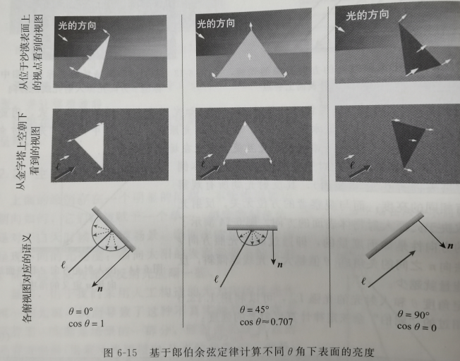
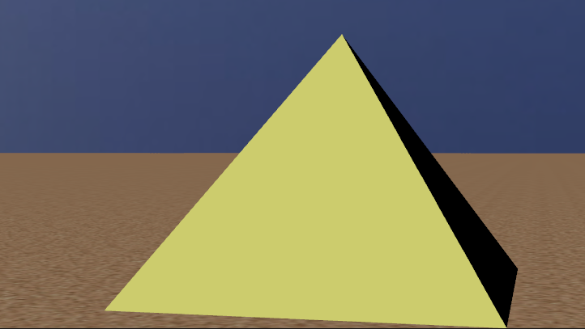
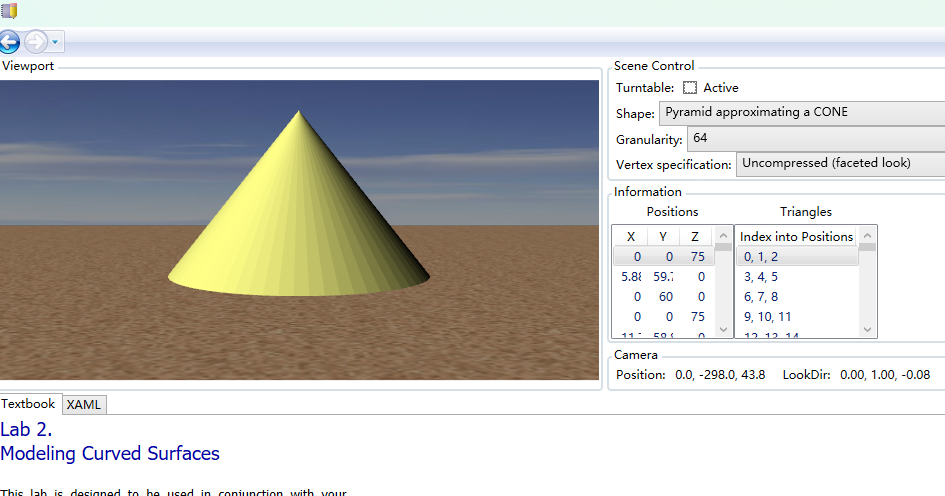
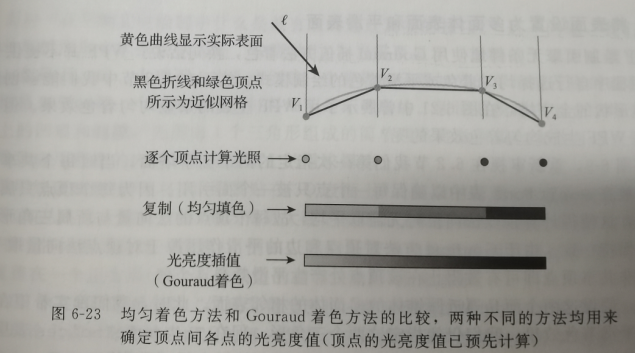
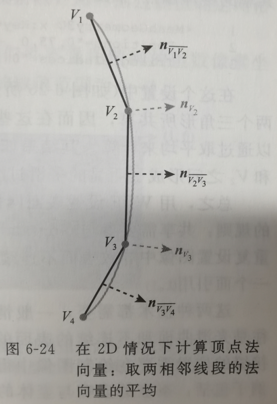
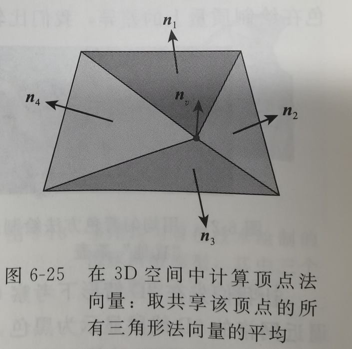
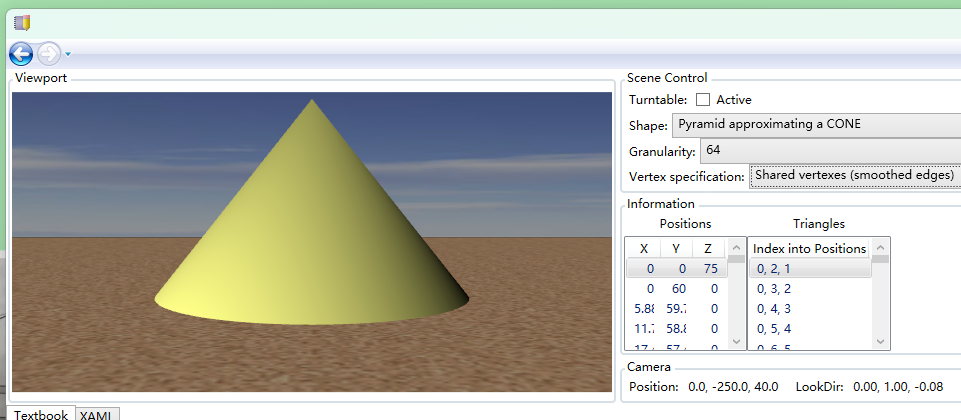

6.固定功能的3D图形平台和层次建模简介
6.2.2 生成更真实的光照
通过Lambert模型计算光线的衰减
理想漫反射Lambert模型的两个关键特征:认为反射光强度与观察的方向无关;仅决定于入射光线方向和表面上该点法线之间的夹角值.

6.2.3 固定功能绘制中的"光照"与"着色"
固定功能中采用的是均匀着色,每个三角形选取一个顶点作为关键顶点,然后内部全部用这个颜色填充

6.3.1 基于插值的着色处理(gouraud着色)
随着边数的增加,开始近似像一个圆锥,但是随着距离拉近,依然是能够看出来并不是的

犹他大学的Henri Gouraud提出的基于网格定点光亮度插值着色技术

2D情况下计算相邻顶点

3D情况下计算相邻面法线的平均

WPF是强制进行Gouraud着色的,但是我们可以通过手动顶点断开,让他无法进行插值计算,从而实现硬边效果

助记小故事--光照
研究前面小熊生成的球体,仔细研究会发现表面存在一些断裂边.后来法线是因为按照顶点里面填充了相同的颜色导致的,后面采用了Gouraud着色技术,对顶点计算法线平均值,这样就生成的均匀的颜色了,只有中间有一小片区域因为顶点是和其他的边断开的,依然是均匀着色.